หลักการพื้นฐานระบบดิจิทัล
🎯 จุดประสงค์ของบทเรียน
- เพื่อเข้าใจพัฒนาการและความสำคัญของระบบดิจิทัลอิเล็กทรอนิกส์
- สามารถอธิบายคุณสมบัติและความแตกต่างของปริมาณทางดิจิทัลและแอนะล็อกได้
- เข้าใจปฏิบัติการตรรกะพื้นฐาน อันได้แก่ NOT, AND และ OR
🧭 ความเชื่อมโยงกับ มคอ.3
CLO4 อธิบายหลักการตรรกะเชิงเลขเบื้องต้นในการนำไปใช้สร้างวงจรดิจิทัลและการประยุกต์ใช้ในการสร้างระบบคอมพิวเตอร์
กิจกรรม: บรรยาย / อภิปราย · ปฏิบัติการ: แนะนำแผงทดลองและเครื่องมือวัด
การประเมิน: แบบฝึกหัดท้ายบทและรายงานผลการทดลอง · สอบกลางภาค (บทที่ 1–6)
1.1 ความเป็นมาของอิเล็กทรอนิกส์
อิเล็กทรอนิกส์เป็นศาสตร์ที่สร้างความเปลี่ยนแปลงอย่างใหญ่หลวงต่ออารยธรรมของโลก ทั้งในแง่บวกและแง่ลบ ในแง่บวก ชีวิตประจำวันของเราทุกวันนี้ต้องอาศัยสิ่งอำนวยความสะดวกที่ทำงานด้วยระบบอิเล็กทรอนิกส์ เช่น เครื่องคอมพิวเตอร์ เครื่องมือสื่อสารโทรคมนาคม เครื่องจักรกลอัตโนมัติในโรงงาน เครื่องใช้ในครัวเรือน วิทยุ โทรทัศน์ ส่วนในแง่ลบ ระบบอิเล็กทรอนิกส์เป็นหัวใจของอาวุธสงครามยุคใหม่ที่มีอำนาจทำลายล้างสูง
ในระยะเวลาเพียงประมาณหนึ่งศตวรรษ มนุษย์ได้ค้นพบอิเล็กตรอน และคิดค้นวิธีบังคับให้มันทำงานตามที่ต้องการได้สำเร็จ ประวัติศาสตร์ของวิชาอิเล็กทรอนิกส์จึงเป็นประวัติศาสตร์แห่งความสำเร็จของมนุษย์ ปัจจุบันมนุษย์พยายามสร้างเครื่องยนต์กลไกเลียนแบบสิ่งมีชีวิต และทำให้รู้จักคิดและหาเหตุผลด้วยสิ่งที่เรียกว่า ปัญญาประดิษฐ์ ซึ่งจะเปลี่ยนแปลงวิถีชีวิตของมนุษย์ไปอีกมาก
จุดเริ่มต้นของประวัติศาสตร์อิเล็กทรอนิกส์อาจนับได้ว่าเกิดขึ้นในปี ค.ศ. 1883 เมื่อ โธมัส เอดิสัน (Thomas Edison) ค้นพบโดยบังเอิญว่าประจุไฟฟ้าสามารถไหลผ่านสุญญากาศได้ — เขานำขั้วไฟฟ้าอีกขั้วหนึ่งไปไว้ในหลอดไฟที่ประดิษฐ์ขึ้น และพบว่ามีประจุไฟฟ้าลบออกมาจากไส้หลอดที่ร้อน เดินทางผ่านสุญญากาศมายังขั้วไฟฟ้านี้ได้ ปรากฏการณ์นี้เป็นจุดเริ่มต้นของอิเล็กทรอนิกส์ยุคหลอดสุญญากาศที่รุ่งเรืองในช่วงประมาณ ค.ศ. 1900–1950 ตารางที่ 1.1 บันทึกเหตุการณ์สำคัญโดยย้อนกลับไปก่อนหน้านั้นอีกราว 20 ปี
ตารางที่ 1.1 ไทม์ไลน์บันทึกเหตุการณ์การค้นพบและการประดิษฐ์ทางอิเล็กทรอนิกส์ที่สำคัญ (คลิกเพื่อแสดงตารางเต็ม)
| ค.ศ. | นักประดิษฐ์ | เหตุการณ์ |
|---|---|---|
| 1864 | แมกซ์เวลล์ James Clerk Maxwell | ประกาศสมการของคลื่น เป็นการปูทางไปสู่การโทรคมนาคมโดยใช้คลื่นวิทยุ |
| 1869 | ครุกส์ และฮิตทอร์ฟ Crookes, Hittorf | พบปรากฏการณ์รังสีแคโทด เป็นการปูทางไปสู่การประดิษฐ์หลอดภาพโทรทัศน์ |
| 1883 | เอดิสัน Thomas Edison | พบปรากฏการณ์การนำกระแสอิเล็กตรอนผ่านสุญญากาศ เป็นการปูทางไปสู่การประดิษฐ์หลอดสุญญากาศ |
| 1888 | เฮิรตซ์ Heinrich Hertz | สาธิตการรับส่งคลื่นวิทยุเป็นครั้งแรก เป็นจุดเริ่มต้นของวิวัฒนาการด้านโทรคมนาคม |
| 1897 | ทอมสัน J.J. Thomson | วัดค่า e/m ได้ เป็นการยืนยันว่าอิเล็กตรอนมีตัวตนจริง และวางพื้นฐานทางทฤษฎีการคำนวณของวิชาอิเล็กทรอนิกส์ |
| 1901 | มาร์โคนี Guglielmo Marconi | ส่งวิทยุข้ามมหาสมุทรแอตแลนติกได้สำเร็จ ยุคของการโทรคมนาคมทางวิทยุได้เริ่มขึ้นแล้ว |
| 1904 | ไอน์สไตน์ Albert Einstein | ค้นพบปรากฏการณ์โฟโตอิเล็กทริก เป็นการปูทางไปสู่อุปกรณ์อิเล็กทรอนิกส์ทางแสง และทำให้เกิดทฤษฎีควอนตัม ซึ่งเป็นพื้นฐานทางทฤษฎีของเทคโนโลยีสารกึ่งตัวนำ |
| 1904 | เฟลมมิง John Ambrose Fleming | ประดิษฐ์หลอดสุญญากาศไดโอด |
| 1906 | เดอ ฟอเรสต์ Lee De Forest | ประดิษฐ์หลอดสุญญากาศไทรโอด ยุคของเทคโนโลยีหลอดสุญญากาศได้เริ่มขึ้นแล้ว |
| 1912 | อาร์มสตรอง Edwin Armstrong | ประดิษฐ์วงจรขยายแบบรีเจนเนอเรทีฟ นับเป็นก้าวสำคัญในวงการอิเล็กทรอนิกส์และวิทยุ |
| 1917 | ไอน์สไตน์ Albert Einstein | ค้นพบทฤษฎีการแผ่รังสีเมื่อถูกกระตุ้น (stimulated emission) ซึ่งเป็นหลักการของเลเซอร์ |
| 1924 | สวอริคิน Vladimir Zworykin | ประดิษฐ์หลอดภาพ เป็นจุดเริ่มต้นของเทคโนโลยีโทรทัศน์ |
| 1927 | แบล็ก Harold Black | ประดิษฐ์วงจรขยายที่ใช้การป้อนกลับแบบลบ (negative feedback amplifier) ทำให้วงจรแอนะล็อกรักษาคุณภาพของสัญญาณได้ และปูทางไปสู่ระบบควบคุมอัตโนมัติแบบแอนะล็อก |
| 1937 | แชนนอน Claude Shannon | เสนอวิธีการทางคณิตศาสตร์ที่เรียกว่า Switching Algebra ซึ่งเป็นทฤษฎีพื้นฐานของระบบดิจิทัลที่เกิดขึ้นในเวลาต่อมา |
| 1940 | วัตสัน-วัตต์ Robert Watson-Watt | ประดิษฐ์เรดาร์ เป็นจุดเริ่มต้นของเทคโนโลยีการนำร่องและนำวิถี |
| 1946 | เอกเคิร์ต และมอคลี J. Presper Eckert, John Mauchly | ประดิษฐ์คอมพิวเตอร์อิเล็กทรอนิกส์แบบดิจิทัลเครื่องแรก ยุคของระบบดิจิทัลได้เริ่มขึ้นแล้ว |
| 1947 | ชอกลีย์, บาร์ดีน, แบรตเทน Shockley, Bardeen, Brattain | ประดิษฐ์ทรานซิสเตอร์ ยุคของสารกึ่งตัวนำได้เริ่มขึ้นแล้ว |
| 1953 | ทาวน์ส Charles Townes | ประดิษฐ์เมเซอร์ เป็นการนำทางไปสู่การประดิษฐ์เลเซอร์ |
| 1954 | เพียร์สัน Gerald Pearson | ประดิษฐ์เซลล์แสงอาทิตย์ เป็นการขยายขอบเขตของอิเล็กทรอนิกส์ไปสู่โลกของไฟฟ้ากำลัง |
| 1958 | คิลบี และนอยส์ Jack Kilby, Robert Noyce | ประดิษฐ์วงจรรวมหรือไอซี (Integrated Circuit: IC) ยุคของไมโครอิเล็กทรอนิกส์ได้เริ่มต้นแล้ว |
| 1960 | ไมแมน Theodore Maiman | ประดิษฐ์ Ruby Laser เป็นการขยายขอบเขตของอิเล็กทรอนิกส์ไปสู่อุปกรณ์ทางแสงและการสื่อสารด้วยลำแสง |
| 1963 | ฮอฟสไตน์, ไฮแมน Hofstein, Heiman | ประดิษฐ์ MOS Transistor อุปกรณ์อิเล็กทรอนิกส์ยุคใหม่ที่ถูกนำไปใช้ในวงจรไอซีแบบดิจิทัล |
| 1969 | ฮอฟฟ์ Ted Hoff | ประดิษฐ์ไมโครโพรเซสเซอร์ เป็นการพลิกโฉมหน้าระบบคอมพิวเตอร์ให้เข้าสู่ยุคไมโครคอมพิวเตอร์ |
จากตารางบันทึกเหตุการณ์ข้างต้น เราอาจตั้งข้อสังเกตได้ 3 ประการ
- ความสำเร็จของเทคโนโลยีอิเล็กทรอนิกส์เป็นผลมาจากการคิดค้นและการประดิษฐ์อย่างต่อเนื่อง ผลงานในอดีตเป็นการวางพื้นฐานหรือปูทางไปสู่ผลงานที่เกิดขึ้นในภายหลัง
- จากเวลาที่ค้นพบหรือประดิษฐ์สิ่งใหม่ ต้องใช้เวลาอีกหลายปีกว่าจะถูกนำไปใช้อย่างแพร่หลาย เช่น ทรานซิสเตอร์ (1947) แพร่หลายในทศวรรษ 1960 · ไอซี (1958) แพร่หลายในทศวรรษ 1970 · ไมโครโพรเซสเซอร์ (1969) แพร่หลายในทศวรรษ 1980
- เครื่องมือที่มีสมรรถนะสูง เช่น คอมพิวเตอร์ หรือระบบนำวิถีของจรวด แท้จริงแล้วคือการผสมผสานหลักการและสิ่งประดิษฐ์ที่มีมาแต่อดีตถึงปัจจุบัน — เป็นมรดกทางปัญญาที่คนรุ่นหลังมีหน้าที่ทำนุบำรุงและพัฒนาต่อ
1.2 พัฒนาการของระบบดิจิทัลอิเล็กทรอนิกส์
1.2.1 วิวัฒนาการของอุปกรณ์อิเล็กทรอนิกส์
เราอาจแบ่งยุคของวิวัฒนาการอิเล็กทรอนิกส์ตั้งแต่อดีตจนถึงปัจจุบันได้เป็น 4 ยุค ดังนี้
หลอดสุญญากาศ
เริ่มมีบทบาทด้านวิทยุโทรคมนาคมก่อน แล้วขยายไปสู่ด้านอื่น ๆ ตอนปลายยุคเริ่มประยุกต์ใช้กับระบบคอมพิวเตอร์
ทรานซิสเตอร์
ระบบคอมพิวเตอร์และอุปกรณ์แบบพกพา (portable) เป็นแรงผลักดัน จุดเด่นคือปรับปรุงคุณภาพพร้อมกับลดขนาดอุปกรณ์
ไอซี
เทคโนโลยีสารกึ่งตัวนำ (โดยเฉพาะซิลิคอน) ทำให้ผลิตอุปกรณ์ราคาถูกแต่มีคุณภาพสูงได้
วีแอลเอสไอ (VLSI)
ผลักดันเทคโนโลยีไอซีต่อไปอีกขั้น จุดเด่นคือการเพิ่มขีดความสามารถของอุปกรณ์
ย่อมาจาก Very Large Scale Integrated circuit แปลว่า วงจรรวมระดับความซับซ้อนสูงมาก หมายถึงไอซีที่มีทรานซิสเตอร์จำนวนมาก ๆ นั่นเอง
เราอยู่ในยุคที่ 4 มาระยะหนึ่ง และใช้ชิ้นส่วนแบบวีแอลเอสไอที่รู้จักกันดี ได้แก่ ไมโครโพรเซสเซอร์ และส่วนประกอบต่าง ๆ ของระบบดิจิทัลอย่างกว้างขวาง แนวโน้มคือใช้วีแอลเอสไอมากขึ้น และใช้ชิ้นส่วนเอกเทศ (discrete components) น้อยลง
1.2.2 วิวัฒนาการของวิธีจัดการกับสัญญาณ
เทคโนโลยีอิเล็กทรอนิกส์เริ่มต้นด้วยระบบแอนะล็อก ซึ่งวิวัฒนาการมาตั้งแต่ประมาณปี 1920 จนถึงประมาณปี 1950 เหตุใดจึงไม่เริ่มต้นด้วยระบบดิจิทัล ทั้งที่ระบบดิจิทัลง่ายกว่าทั้งในทางทฤษฎีและปฏิบัติ? มีเหตุผลสองประการ
โลกของเราเป็นโลกของระบบแอนะล็อก ปริมาณที่พบในชีวิตประจำวันส่วนใหญ่มีค่าต่อเนื่องทั้งในเชิงขนาดและเวลา
วงจรดิจิทัลที่ทำหน้าที่เดียวกับวงจรแอนะล็อกมักเปลืองชิ้นส่วนเพิ่มขึ้นนับสิบเท่าร้อยเท่า — ดิจิทัลอาศัยการทำงานง่าย ๆ ของหน่วยงานจำนวนมาก ขณะที่แอนะล็อกทำงานยุ่งยากกว่าแต่ใช้หน่วยงานน้อยกว่า ยุคแรกจึงยังสร้างระบบดิจิทัลที่ใช้ได้จริงไม่ได้
ตั้งแต่มีการประดิษฐ์เครื่องคอมพิวเตอร์อิเล็กทรอนิกส์แบบดิจิทัลในปี 1946 ระบบดิจิทัลก็วิวัฒนาการอย่างรวดเร็ว และมีแนวโน้มจะเข้ามาแทนที่ระบบแอนะล็อกในการใช้งานทุกประเภท เพราะมีข้อดีดังนี้
- วงจรดิจิทัลที่ออกแบบและสร้างอย่างถูกต้อง ใช้งานได้ทันทีโดยไม่ต้องปรับแต่ง
- รักษาคุณภาพสัญญาณได้ดีกว่ามาก หลังจากผ่านกระบวนการต่าง ๆ
- ปรับเปลี่ยนหรือปรับปรุงสัญญาณได้ตามความพอใจ อย่างที่ระบบแอนะล็อกทำไม่ได้
ดังนั้นงานที่มีสัญญาณแอนะล็อกล้วน ๆ เช่น ระบบโทรศัพท์ หรือระบบเครื่องส่ง-เครื่องรับโทรทัศน์ ก็มีแนวโน้มเปลี่ยนเป็นการจัดการสัญญาณแบบดิจิทัล โดยแปลงแอนะล็อกเป็นดิจิทัลที่ต้นทาง ประมวลผล แล้วแปลงกลับเป็นแอนะล็อกที่ปลายทาง แม้สิ้นเปลืองกว่า แต่ด้วยข้อดีดังกล่าววิธีนี้จึงได้รับความนิยมมากขึ้นตามลำดับ
1.2.3 วิวัฒนาการของการควบคุมอัตโนมัติ
กระบวนการควบคุมอัตโนมัติแบบแอนะล็อกในอดีตทำได้ง่ายและใช้ชิ้นส่วนเพิ่มเติมน้อย เมื่อเทคโนโลยีมุ่งสู่ระบบดิจิทัล ระบบควบคุมอัตโนมัติก็ต้องกลายเป็นดิจิทัลไปด้วย
การควบคุมอัตโนมัติแบบดิจิทัลใช้ชิ้นส่วนจำนวนมาก หากใช้กับงานเล็ก ๆ อาจไม่คุ้มค่า แต่เทคโนโลยีวีแอลเอสไอทำให้สร้างวงจรดิจิทัลสมรรถนะสูงราคาถูกได้ โดยเฉพาะไมโครโพรเซสเซอร์ ที่นำวิธีการของระบบคอมพิวเตอร์มาใช้กับงานควบคุมได้ทั้งงานเล็กและงานใหญ่ เครื่องใช้อิเล็กทรอนิกส์ปัจจุบันจึงถูกควบคุมด้วยไมโครโพรเซสเซอร์มากขึ้นทุกที
1.3 ปริมาณทางดิจิทัลและแอนะล็อก
มีค่าต่อเนื่อง (continuous) เช่น อุณหภูมิ เวลา ความดัน ระยะทาง ความดังของเสียง
เป็นชุดของค่าที่แยกออกเป็นชิ้น ๆ (discrete) แทนด้วยรหัสที่ประกอบด้วย 1 และ 0
การวัดปริมาณในธรรมชาติส่วนใหญ่อยู่ในรูปแอนะล็อก เช่น อุณหภูมิอากาศในช่วงหนึ่งของวัน ค่าจะไม่กระโดดจาก 37 °C ไปเป็น 38 °C แบบฉับพลัน แต่เปลี่ยนแปลงอย่างต่อเนื่อง กล่าวคือค่าที่วัดได้เป็นฟังก์ชันที่ต่อเนื่องตามเวลา ดังรูปที่ 1.1
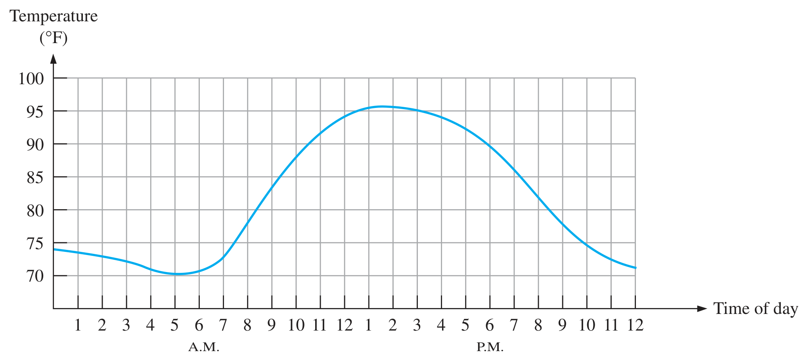
หากอ่านและบันทึกค่าอุณหภูมิทุก ๆ หนึ่งชั่วโมง แทนการเขียนกราฟต่อเนื่อง ก็คือการนำค่าตัวอย่าง (sample) มาเป็นตัวแทนข้อมูล ผลลัพธ์จะเป็นดังรูปที่ 1.2 ซึ่งมีค่าสูงต่ำตามจุดเวลาโดยขาดความต่อเนื่อง และเมื่อนำแต่ละค่ามาทำให้อยู่ในรูปรหัสดิจิทัล (digital code) ที่ประกอบด้วย 1 และ 0 เราเรียกว่า ตัวแทนข้อมูลทางดิจิทัล (digital representation)
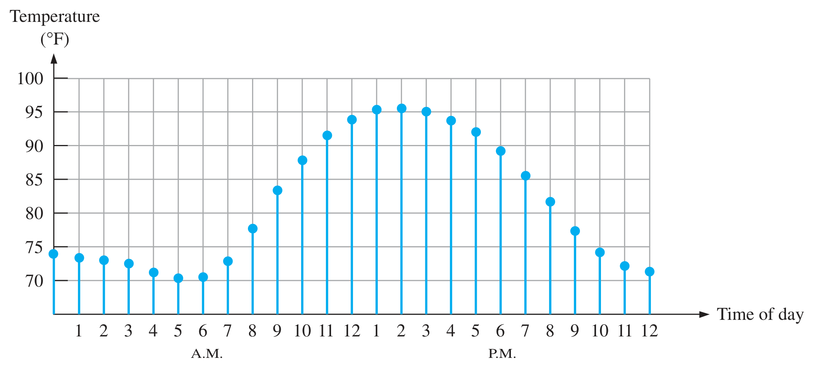
ถ้าสุ่มค่าทุก 4 ชั่วโมง ด้วยรหัส 2 บิต กราฟที่สร้างกลับจากรหัสต่างจากของจริงมากแค่ไหน? การเพิ่มความถี่ในการสุ่มและจำนวนบิตช่วยอะไร และต้องแลกกับอะไร (ดูช่อง “ข้อมูลทั้งหมด”)
1.4 ข้อได้เปรียบของดิจิทัล
ในแง่การประยุกต์ใช้ ข้อมูลในรูปดิจิทัลได้เปรียบกว่าข้อมูลในรูปแอนะล็อก ทั้งการประมวลผลข้อมูล (processing) และการส่งถ่ายข้อมูล (transmission) ทำได้อย่างมีประสิทธิภาพและน่าเชื่อถือกว่า ส่วนการจัดเก็บข้อมูล (storage) แบบดิจิทัลก็ได้เปรียบ เช่น เสียงเพลงในรูปดิจิทัลจัดเก็บได้กะทัดรัด และทำซ้ำได้โดยความคมชัดไม่ผิดเพี้ยนจากต้นฉบับ
คือระดับแรงดันไฟฟ้าของข้อมูลที่ขยับเปลี่ยนแปลงไปมาโดยไม่พึงประสงค์ — ในสัญญาณแอนะล็อก noise ส่งผลกระทบอย่างมากต่อคุณภาพเสียง แต่เมื่อเสียงอยู่ในรูปข้อมูลดิจิทัล noise แทบไม่มีผลใด ๆ เลย
อย่างไรก็ตาม ปริมาณในธรรมชาติเป็นแอนะล็อก หากต้องการให้ระบบดิจิทัลประมวลผล ต้องเชื่อมโยงระหว่างสองระบบด้วย
- ADC
- ตัวแปลงสัญญาณแอนะล็อกเป็นดิจิทัล (Analog-to-Digital Converter)
- DAC
- ตัวแปลงสัญญาณดิจิทัลเป็นแอนะล็อก (Digital-to-Analog Converter)
ระบบเครื่องเสียงสมัยก่อนเป็นแอนะล็อกทั้งสิ้น ต่อมาปรับปรุงเป็นดิจิทัล ทำให้คุณภาพเสียงดีขึ้น มีฟังก์ชันควบคุมและแต่งเสียงมากขึ้น รูปที่ 1.3 แสดงเครื่องขยายเสียงแบบแอนะล็อก — เสียงพูดเป็นสัญญาณต่อเนื่อง ส่งไปยังเครื่องขยายเสียง (linear amplifier) ที่ขยายสัญญาณให้แรงขึ้นแล้วขับลำโพง
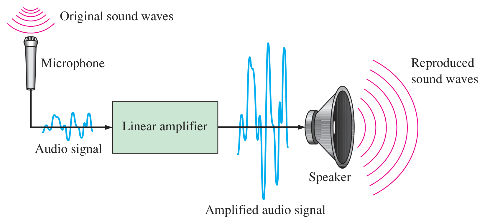
ปัจจุบันอุปกรณ์เสียงพัฒนาเป็นดิจิทัล เช่น การเก็บเสียงลงแผ่น CD ดังรูปที่ 1.4 — ตอนบันทึก สัญญาณจากไมโครโฟนถูกแปลงเป็นดิจิทัลด้วย ADC แล้วบันทึกลงแผ่น · ตอนเล่น ระบบอ่านข้อมูลดิจิทัลออกมาส่งให้ DAC ได้สัญญาณแอนะล็อกที่แทนเสียง แล้วส่งต่อภาคขยายเพื่อขับลำโพง
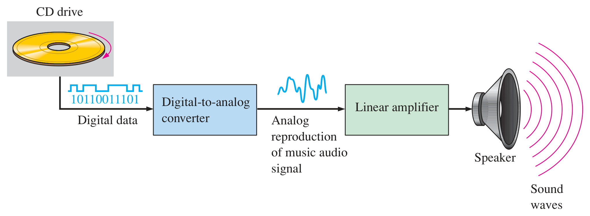
1.5 ลักษณะของสัญญาณดิจิทัล
ระบบดิจิทัลนำเลขฐานสองแต่ละบิตมาต่อเรียงกัน ถ้าบิตเป็น 1 เรียกว่า ลอจิกหนึ่ง หรือ HIGH ถ้าเป็น 0 เรียกว่า ลอจิกศูนย์ หรือ LOW โดยแต่ละค่าแทนแรงดันไฟฟ้าค่าหนึ่ง เช่น ลอจิก 1 แทนด้วย 5 V และลอจิก 0 แทนด้วย 0 V
ค่าแรงดันที่แทนลอจิก 0 หรือ 1 เรียกว่า ระดับลอจิก (logic level) ซึ่งขึ้นกับประเภทของอุปกรณ์ บางชนิดแทนลอจิก 1 ด้วย 12 V แต่ส่วนใหญ่ใช้ 5 V และ 0 V ทั้งนี้แรงดันไม่จำเป็นต้องตรงค่าพอดี หากปรับแรงดันตั้งแต่ 0 V ถึง 5 V จะพบช่วงแรงดันสำคัญดังนี้
- VL(min)
- แรงดันต่ำสุดที่ระบบรับรู้ว่าเป็นลอจิก 0
- VL(max)
- แรงดันสูงสุดที่ระบบรับรู้ว่าเป็นลอจิก 0
- VH(min)
- แรงดันต่ำสุดที่ระบบรับรู้ว่าเป็นลอจิก 1
- VH(max)
- แรงดันสูงสุดที่ระบบรับรู้ว่าเป็นลอจิก 1
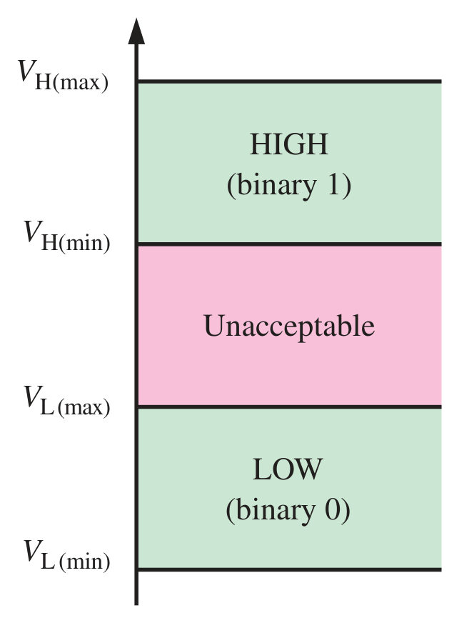
ค่าแรงดันระหว่าง VL(max) ถึง VH(min) เป็นช่วงที่ระบบไม่รับรู้ (ไม่สามารถตีความได้) ตัวอย่างเช่น อุปกรณ์บางตัวกำหนดให้ 2–5 V เป็น HIGH และ 0–0.8 V เป็น LOW หากมีแรงดัน 3.5 V เข้ามา ระบบจะตีความว่าเป็นลอจิก HIGH หรือ 1
ปริมาณดิจิทัลบางครั้งไม่เปลี่ยนแปลงตามเวลา เช่น ข้อมูล 1010 คือข้อมูลขนาด 4 บิต ที่มีค่า 1, 0, 1, 0 ไปตลอด แต่บางครั้งก็เปลี่ยนไปตามเวลา ซึ่งอธิบายได้ด้วยไดอะแกรมเวลา (timing diagram) เช่นในรูปที่ 1.6 ข้อมูลเริ่มต้นเป็น 0 ต่อมาเป็น 1 แล้วกลับเป็น 0 อีกครั้ง สัญญาณลักษณะนี้เรียกว่ารูปคลื่นดิจิทัล (digital waveform)
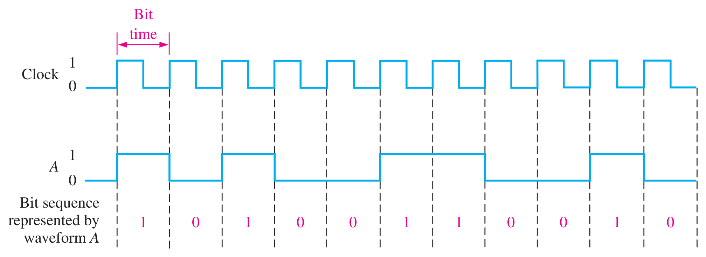
1.6 สัญญาณนาฬิกาและพัลส์
ในระบบดิจิทัลที่การทำงานเปลี่ยนไปตามเวลา จะใช้สัญญาณนาฬิกา (clock) เป็นตัวกระตุ้นการทำงาน ซึ่งมีค่าลอจิกสลับไปมา (0→1 และ 1→0) โดยมีคาบเวลาที่แน่นอน (periodic) หรือมีความถี่คงที่ค่าหนึ่ง
ส่วนสัญญาณพัลส์ (pulse signal) เป็นสัญญาณที่ส่งออกมาในช่วงเวลาสั้น ๆ เพื่อกระตุ้นให้ระบบทำงานอย่างใดอย่างหนึ่ง มีทั้งพัลส์แบบบวก (positive-going pulse) ที่เปลี่ยนจาก 0 เป็น 1 และพัลส์แบบลบ (negative-going pulse) ที่เปลี่ยนจาก 1 เป็น 0 ดังรูปที่ 1.7
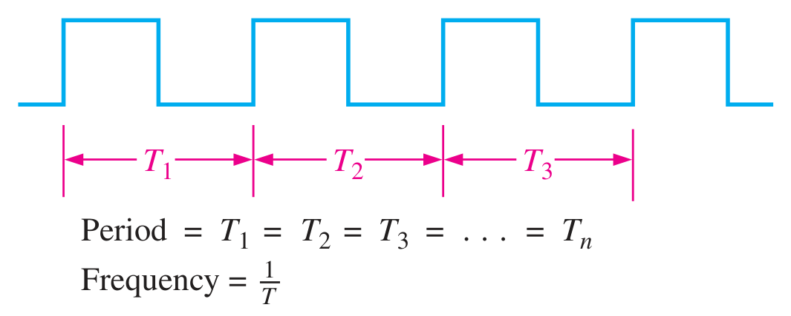
(ก) สัญญาณที่มีคาบเวลาแน่นอน (periodic)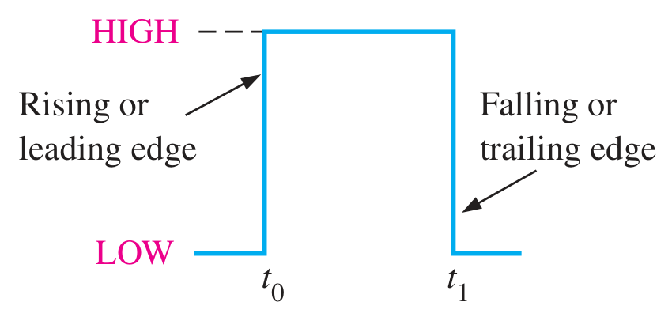
(ค) พัลส์แบบบวก (positive-going pulse)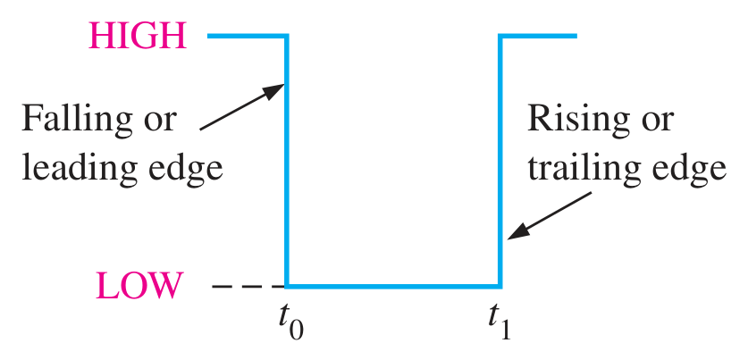
(ง) พัลส์แบบลบ (negative-going pulse)สำหรับสัญญาณที่มีคาบเวลาแน่นอน เราหาความถี่ (frequency) ได้จากส่วนกลับของคาบเวลา และหาคาบเวลาได้จากส่วนกลับของความถี่
คุณสมบัติสำคัญอีกอย่างของพัลส์คือดิวตี้ไซเคิล (duty cycle) ซึ่งเป็นอัตราส่วนระหว่างความกว้างของพัลส์ (tw) กับคาบเวลา คิดเป็นเปอร์เซ็นต์
ถ้ามีสัญญาณพัลส์ดังรูปที่ 1.8 จงหาค่าต่อไปนี้ (ก) คาบเวลา (ข) ความถี่ (ค) ดิวตี้ไซเคิล
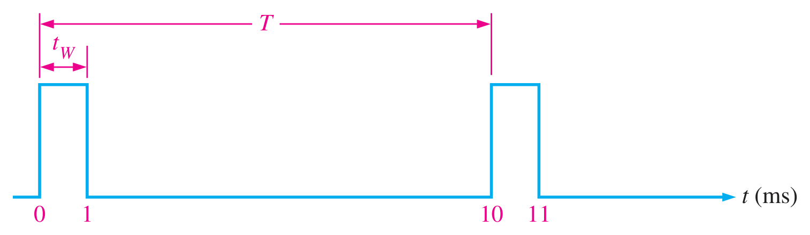
แสดงวิธีทำ
(ก) คาบเวลาวัดจากจุดเริ่มต้นพัลส์ลูกหนึ่งถึงจุดเริ่มต้นพัลส์ลูกถัดไป → T = 10 ms
(ข) f = 1/T = 1/10 ms → f = 100 Hz
(ค) ดิวตี้ไซเคิล = (tw/T) × 100% = (1 ms / 10 ms) × 100% → 10%
พิจารณาพัลส์ในรูปที่ 1.7 (ค) และ (ง) จะเห็นว่าพัลส์มีขอบสัญญาณ (edge) 2 ประเภท
- leading edge
- ขอบสัญญาณนำหน้า เกิดขึ้นก่อน ที่เวลา t0
- trailing edge
- ขอบสัญญาณตามหลัง เกิดขึ้นทีหลัง ที่เวลา t1
สำหรับพัลส์แบบบวก leading edge คือ rising edge และ trailing edge คือ falling edge ส่วนพัลส์แบบลบจะกลับกัน · พัลส์ในรูปเป็นพัลส์ในอุดมคติ (ideal pulse) ที่ขอบเปลี่ยนแปลงฉับพลันทันที (instantaneous) ซึ่งในความเป็นจริงเกิดขึ้นไม่ได้ แต่โดยทั่วไปเราจะอนุมานว่าสัญญาณเป็นอุดมคติ
พัลส์จริงต้องใช้เวลาเปลี่ยนจาก LOW เป็น HIGH เรียกว่า rise time (tr) และจาก HIGH เป็น LOW เรียกว่า fall time (tf) · ในทางปฏิบัติวัด rise time จาก 10% ถึง 90% ของแอมพลิจูด และ fall time จาก 90% ถึง 10% ช่วง 10% บนและล่างไม่นับรวม เพราะรูปคลื่นบริเวณนั้นไม่เป็นเชิงเส้น (non-linear) · ความกว้างของพัลส์ (tw) วัดจากจุด 50% ของ rising edge ถึงจุด 50% ของ falling edge
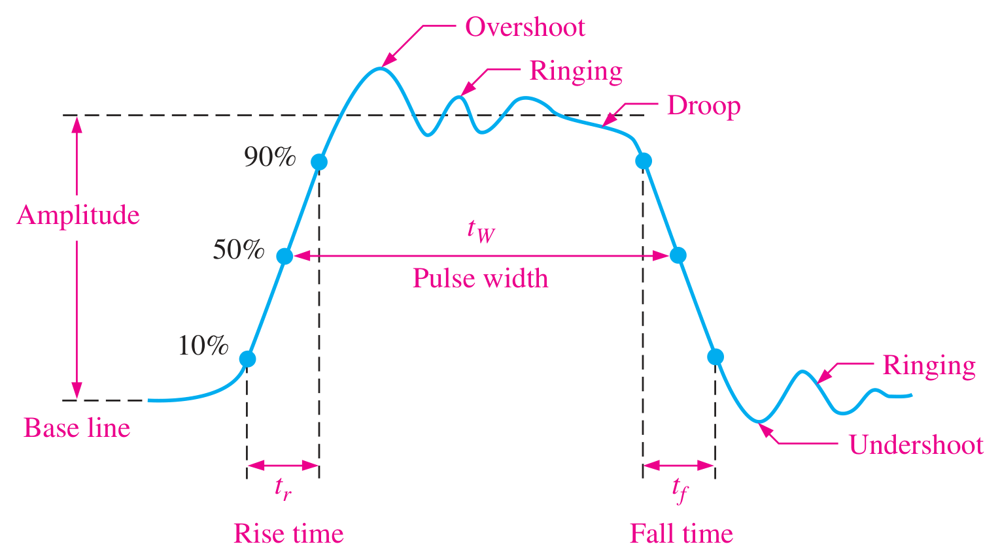
1.6.1 ไดอะแกรมเวลา
ไดอะแกรมเวลา (timing diagram) คือกราฟแสดงรูปคลื่นดิจิทัลหลายสัญญาณพร้อมกัน เพื่อดูความสัมพันธ์ของการเปลี่ยนแปลง โดยเวลาเดินจากซ้ายไปขวา ดังรูปที่ 1.10 ซึ่งมีรูปคลื่น 4 รูป จะเห็นว่าสัญญาณ A, B และ C เป็น HIGH พร้อมกันที่พัลส์ลูกที่ 7 และหลังจบพัลส์ลูกนั้นสัญญาณทั้งสามกลับเป็น LOW
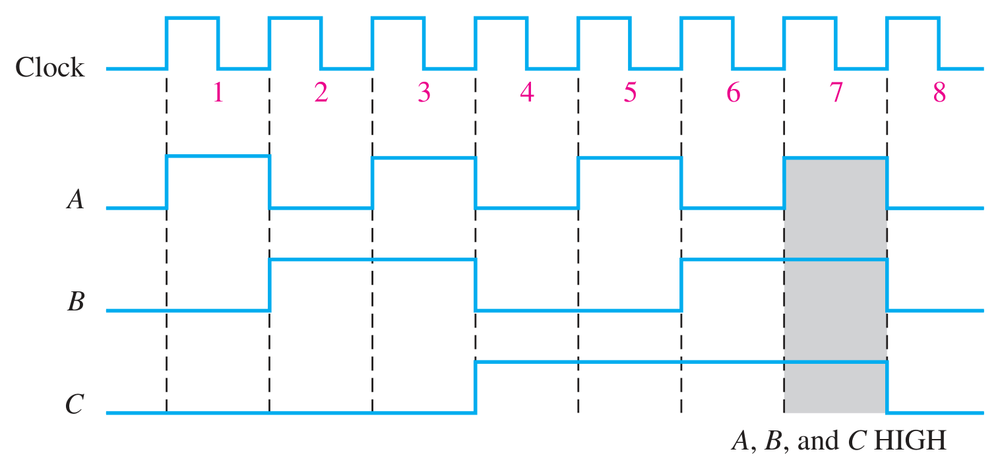
1.7 พื้นฐานเรื่องตัวปฏิบัติการทางตรรกะ
ตัวปฏิบัติการทางตรรกะพื้นฐานมี 3 ชนิด ได้แก่ NOT, AND และ OR ดังสัญลักษณ์มาตรฐานในรูปที่ 1.11 เส้นด้านซ้ายเรียกว่าอินพุต (inputs) และเส้นด้านขวาเรียกว่าเอาต์พุต (outputs) วงจรที่ทำหน้าที่ของตัวปฏิบัติการเรียกว่าลอจิกเกต (logic gate) · เกต AND และ OR มีอินพุตได้หลายเส้น (เส้นประในรูป) ขณะที่เกต NOT มีอินพุตได้เพียงเส้นเดียว
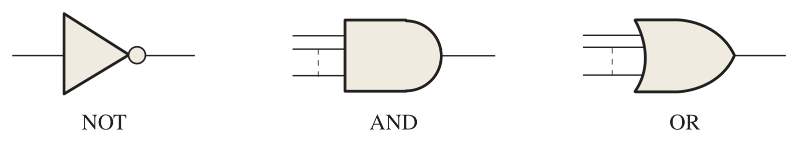
ในการปฏิบัติการทางตรรกะ เราแทนค่าความจริง “จริง” (true) และ “เท็จ” (false) ด้วยระดับสัญญาณ HIGH (ลอจิก 1) และ LOW (ลอจิก 0) ตามลำดับ เอาต์พุตของเกตแต่ละชนิดขึ้นอยู่กับชุดของสัญญาณอินพุต ดังนี้
1.7.1 NOT
เปลี่ยนระดับลอจิกเป็นค่าตรงกันข้าม — อินพุต HIGH ได้เอาต์พุต LOW และกลับกัน เอาต์พุตจึงเป็นนิเสธของอินพุต เรียกวงจรนี้ว่า อินเวอร์เตอร์ (inverter)
1.7.2 AND
เอาต์พุตเป็น HIGH เฉพาะกรณีที่อินพุตทั้งหมดเป็น HIGH เท่านั้น ถ้ามีอินพุตใดเป็น LOW เอาต์พุตเป็น LOW เรียกว่า เกต AND
1.7.3 OR
เอาต์พุตเป็น HIGH เพียงมีอินพุตใดอินพุตหนึ่งเป็น HIGH มีเพียงกรณีเดียวที่ได้ LOW คือเมื่ออินพุตเป็น LOW ทั้งหมด เรียกว่า เกต OR
1.7.1 NOT
1.7.2 AND
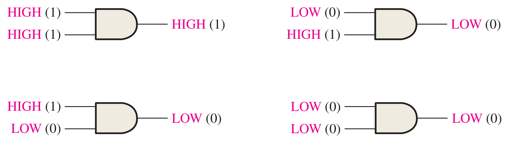
1.7.3 OR
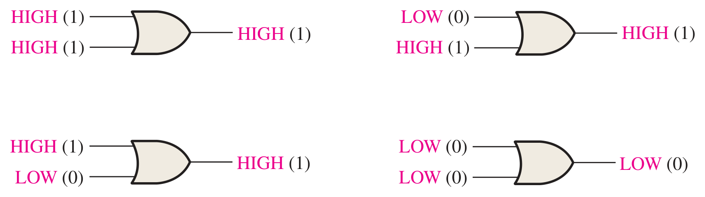
เกต AND 3 อินพุตมีกี่กรณีที่ให้เอาต์พุต HIGH? แล้วเกต OR 4 อินพุตมีกี่กรณีที่ให้เอาต์พุต LOW? — ตรวจคำตอบด้วยตารางค่าความจริงในแบบจำลองด้านบน
สรุปท้ายบท
- อิเล็กทรอนิกส์พัฒนาผ่าน 4 ยุค ได้แก่ หลอดสุญญากาศ ทรานซิสเตอร์ ไอซี และวีแอลเอสไอ
- ปริมาณแอนะล็อกมีค่าต่อเนื่อง (continuous) ส่วนปริมาณดิจิทัลมีค่าไม่ต่อเนื่อง (discrete) และใช้ ADC / DAC เชื่อมระหว่างสองระบบ
- ระบบดิจิทัลได้เปรียบด้านการประมวลผล การส่งถ่าย และการจัดเก็บข้อมูล และทนทานต่อสัญญาณรบกวน
- ระดับลอจิกกำหนดด้วยช่วงแรงดัน VL และ VH ระหว่างสองช่วงเป็นบริเวณที่ระบบไม่รับรู้
- สัญญาณนาฬิกามีคาบคงที่: f = 1/T และ ดิวตี้ไซเคิล = (tw/T) × 100%
- ตัวปฏิบัติการพื้นฐาน: NOT กลับค่า · AND เป็น 1 เมื่อทุกอินพุตเป็น 1 · OR เป็น 1 เมื่อมีอินพุตใดเป็น 1
แบบทดสอบท้ายบท
เลือกคำตอบ ระบบจะเฉลยพร้อมคำอธิบายทันที (ไม่มีการบันทึกคะแนน ใช้สำหรับทบทวนด้วยตนเอง)
ปฏิบัติการสัปดาห์ที่ 1 · แนะนำแผงทดลองและเครื่องมือวัด
ตามแผนการสอนใน มคอ.3 ชั่วโมงปฏิบัติการของสัปดาห์แรกเป็นการเตรียมความพร้อมสำหรับการต่อวงจรจริงด้วยไอซีตระกูล 74 ตลอดภาคการศึกษา
| เครื่องมือ | ใช้ทำอะไร | เชื่อมโยงกับเนื้อหาบทที่ 1 |
|---|---|---|
| แหล่งจ่ายไฟ DC DC power supply | จ่ายแรงดัน +5 V ให้ไอซีผ่านรางไฟของแผงทดลอง | ระดับลอจิก 5 V / 0 V (1.5) |
| มัลติมิเตอร์ Digital multimeter | วัดแรงดันที่ขาอินพุต/เอาต์พุต ตรวจว่าอยู่ในช่วง HIGH หรือ LOW | VL(max), VH(min) (1.5) |
| ลอจิกโพรบ Logic probe | แสดงสถานะ HIGH / LOW / พัลส์ ของจุดที่แตะด้วยไฟแสดงผล | สัญญาณดิจิทัลและพัลส์ (1.5–1.6) |
| เครื่องกำเนิดสัญญาณ Function generator | สร้างสัญญาณนาฬิกาแบบสี่เหลี่ยม ปรับความถี่และดิวตี้ไซเคิล | T, f, ดิวตี้ไซเคิล (1.6) |
| ออสซิลโลสโคป Oscilloscope | แสดงรูปคลื่นเทียบกับเวลา วัดคาบ ความถี่ rise/fall time | พัลส์ไม่เป็นอุดมคติ, ไดอะแกรมเวลา (1.6) |
📋 ใบงานปฏิบัติการที่ 1
- ระบุกลุ่มรูที่เชื่อมถึงกันบนแผงทดลองจริง เทียบกับแบบจำลองด้านบน และต่อรางไฟ +5 V / GND ให้ครบทั้งบนและล่าง
- ตั้งแหล่งจ่ายไฟที่ 5 V วัดแรงดันระหว่างรางไฟด้วยมัลติมิเตอร์ แล้วบันทึกค่า
- ต่อตัวต้านทานปรับค่า (potentiometer) เป็นวงจรแบ่งแรงดัน ปรับแรงดันตั้งแต่ 0–5 V แล้วใช้ลอจิกโพรบตรวจว่าแรงดันใดแสดงผลเป็น LOW / HIGH / ไม่แสดงผล — เปรียบเทียบกับแบบจำลองระดับลอจิกในหัวข้อ 1.5
- ตั้งเครื่องกำเนิดสัญญาณเป็นคลื่นสี่เหลี่ยม 1 kHz แสดงบนออสซิลโลสโคป วัดคาบเวลา ความถี่ และดิวตี้ไซเคิล แล้วคำนวณตรวจสอบด้วยสูตร f = 1/T
- ขยายแกนเวลาของออสซิลโลสโคปเพื่อดูขอบขาขึ้นของสัญญาณ ประมาณค่า rise time จากจุด 10% ถึง 90%
ส่ง: ตารางบันทึกผล + ภาพถ่ายหน้าจอออสซิลโลสโคป + สรุปสิ่งที่สังเกตได้ (ประเมินตาม CLO ในหมวดแบบฝึกหัดและรายงานผลการทดลอง 20%)
ปิดแหล่งจ่ายไฟทุกครั้งก่อนต่อหรือแก้วงจร · ตรวจขั้ว +5 V และ GND ของไอซีก่อนจ่ายไฟ (ต่อกลับขั้วทำให้ไอซีเสียหายได้) · ห้ามป้อนแรงดันเกินกว่าที่ datasheet กำหนด